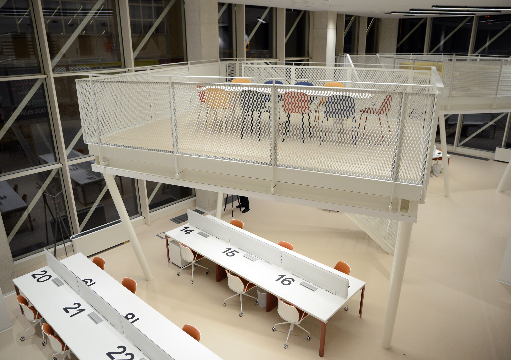
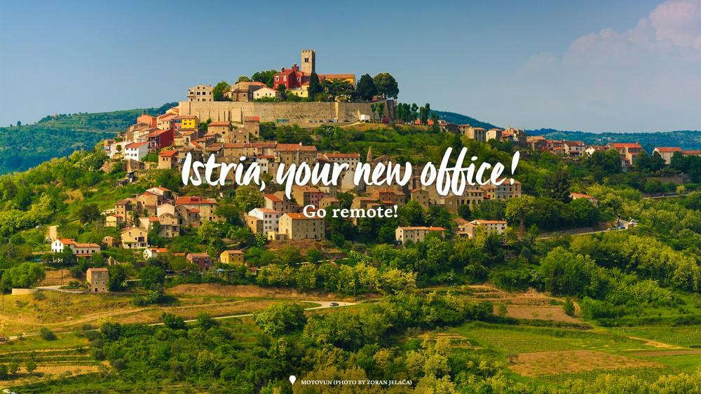
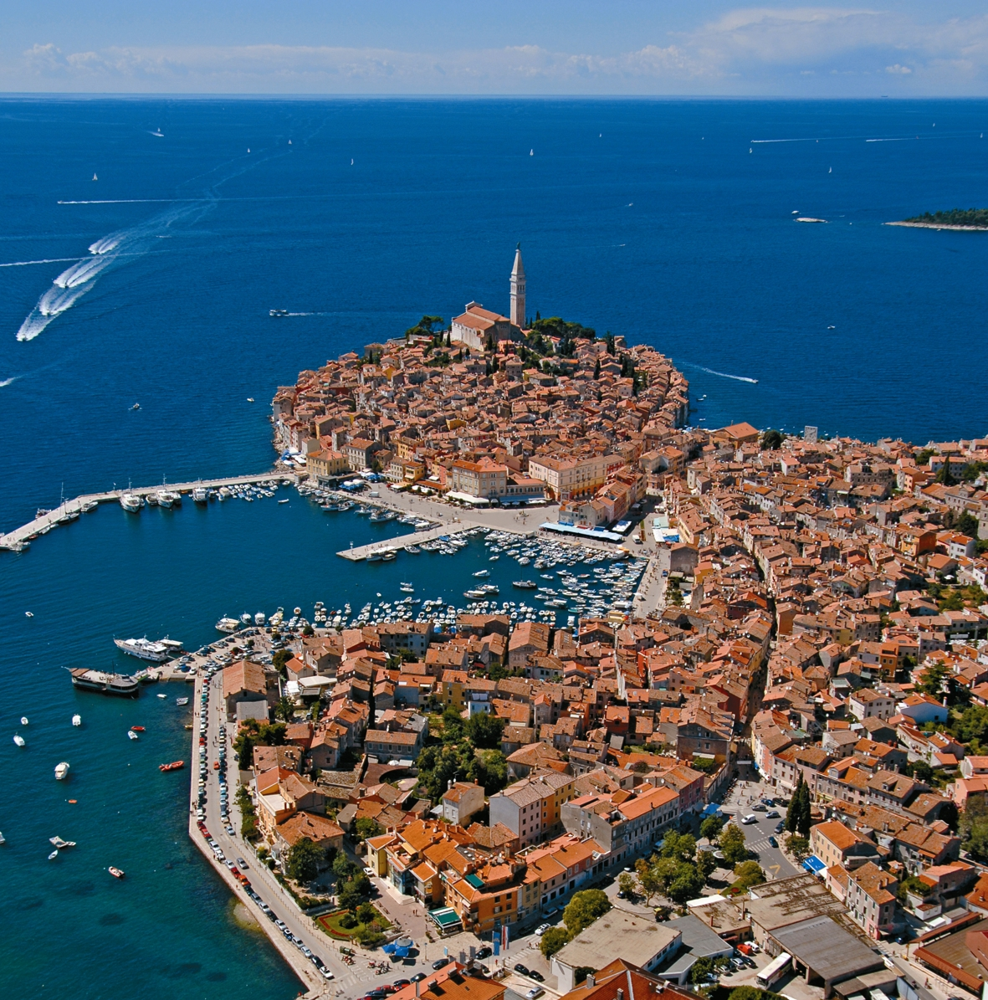
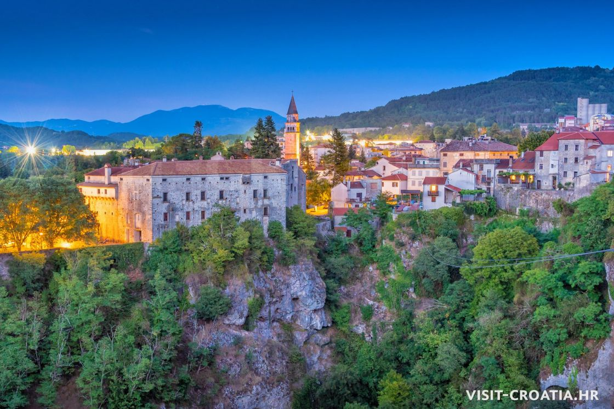
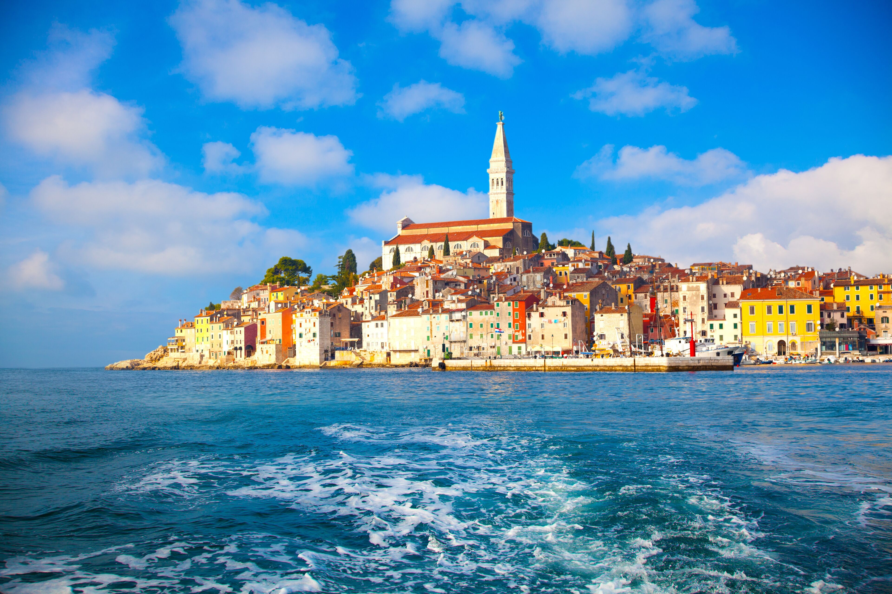
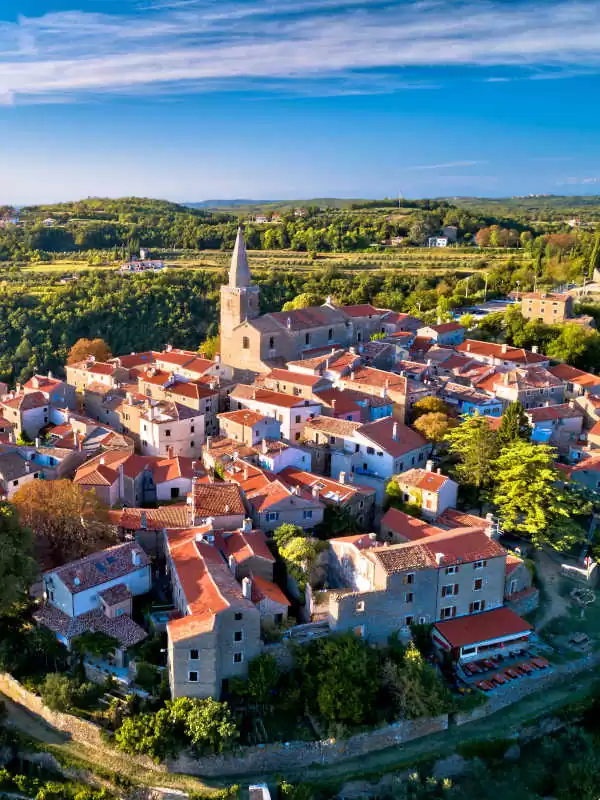
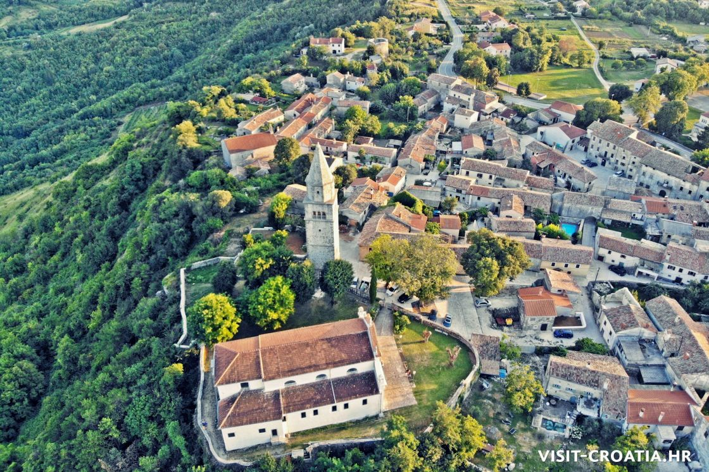

Desks + meeting rooms
Pula Coworking Hub
PulaFull-time desks and meeting rooms near the old town; the amphitheatre is a ten-minute walk for when you need a break that isn't a screen.
A working life on the peninsula
Stone towns on the hills, the Adriatic at the bottom of every road, and enough fibre to hold a client call from a terrace. This is the practical, unromantic guide to actually doing it.

None of this is marketing copy from a tourist board. It's what changes once you're actually working from here.
Fibre reaches most coastal towns and the larger hill towns; rural stretches vary, so we note actual measured speeds per location, not carrier promises.
A one-bedroom outside the main tourist strips runs well under Western European rates, and drops further the moment you move inland from June or Rovinj.
Shops close for the afternoon, dinner starts late, and nobody expects a reply at 9pm. Your calendar adjusts faster than you'd think.
Croatia's digital nomad permit is workable but bureaucratic. We keep a running, dated breakdown of the actual steps, not the summary version.
Istrian cuisine sits closer to northern Italy than the rest of Croatia — truffles, olive oil, malvazija — and the produce is local by default, not by branding.
A short list of places we've sat in long enough to trust the wifi and the coffee.

Full-time desks and meeting rooms near the old town; the amphitheatre is a ten-minute walk for when you need a break that isn't a screen.

A converted stone loft above the hill town square. Slower internet than the coast, but the view is the actual reason people book it.

Drop-in seating near the harbour, popular in shoulder season and genuinely crowded in July — plan accordingly.

Central, unglamorous, reliably fast, and the cheapest desk rate on this list. Good default if you're not chasing a view.

The obvious choice, and the most expensive one. Best if you want restaurants, other remote workers, and a swim after your last call. Book shoulder season if you can; July and August prices roughly double.

Slower, cheaper, and considerably quieter. Grožnjan in particular has an actual resident community of artists and remote workers rather than a tourist crowd. Car access matters more here.

The least photographed part of Istria and, for that exact reason, the least expensive. Good long-stay value if you don't need to be near the water.
Old town streets, harbour swims, the Batana boat museum.
Roman amphitheatre still in use for concerts and film screenings.
Hilltop walls, truffle season from autumn through winter.
Artist studios, small galleries, a genuine resident creative scene.
The canyon that reportedly inspired Jules Verne; far fewer visitors than the coast.
Malvazija and teran tastings, most family-run and open by appointment.
Three things people ask us about in the first week, every time.
Guidance through Croatia's digital nomad permit and the local police-administration process, from someone who's filed it before.
Introductions to English-speaking accountants and lawyers who work with foreign remote workers, not just local businesses.
A shortlist of long-stay landlords who are used to remote workers and won't disappear after the deposit.
One message is enough to start — where you're coming from, roughly when, and what you're unsure about. We reply from a person, not a template.
Prefer email? Write to hello@digitalnomadsistria.com.